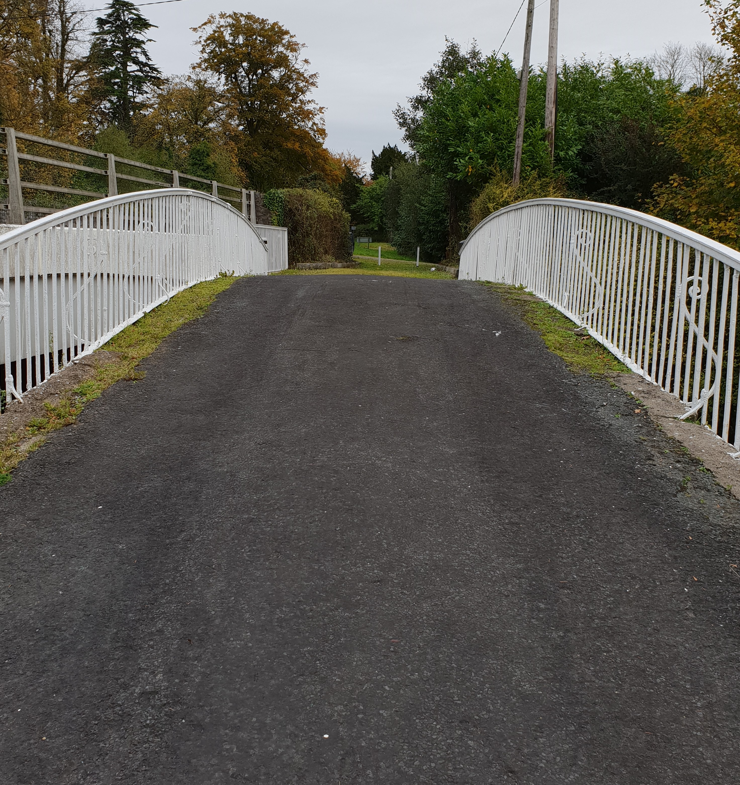
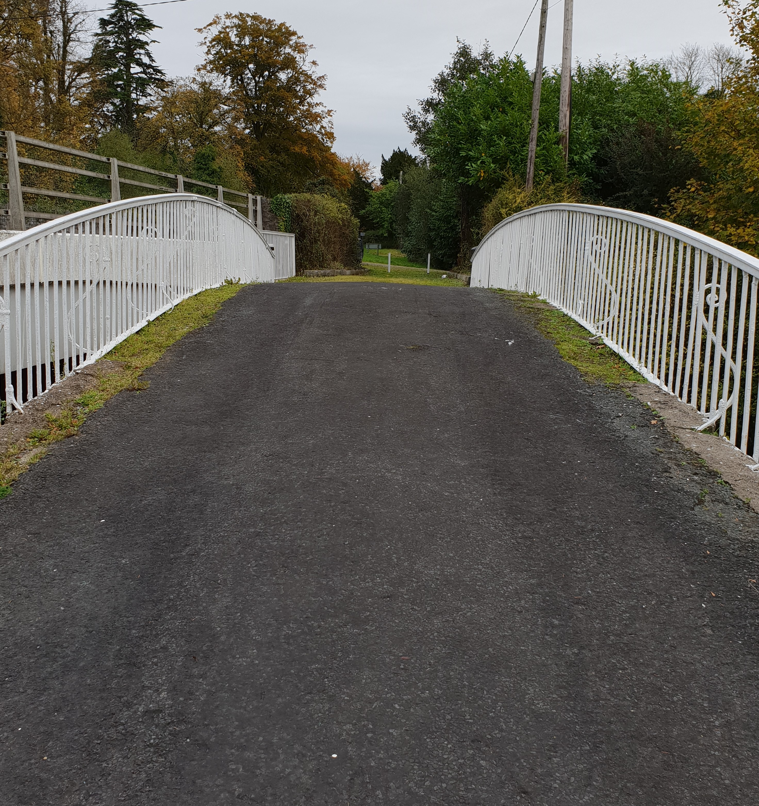

Hundreds of people gathered at Barrington’s Bridge in County Limerick for its 200-year anniversary celebrations in September.
Situated in the townland of Clonkeen, the bridge connects the parishes of Murroe-Boher and Ahane, Castleconnell and Montpelier and carries the name of Matthew Barrington, who commissioned it in 1818.
Following an address by the chairperson of the Barrington’s Bridge Residents’ Committee at the celebratory event, there was an informative talk given by Fr Brian Murphy on the erection of the bridge.
Among the attendance were Fr Loughlin Brennan, PP Murroe-Boher and Fr Tom Whelan, CC Castleconnell, who blessed the old and new bridges; Fr Willie Teehan, PP Castleconnell and Fr Donough O’Malley, president of the Thomond Archaeological and Historical Society; Senator Kieran O’Donnell; Councillors Marian Hurley, Brigid Teefy, Gerald Mitchell, Eddie Ryan; former councillors Paddy Hourigan and Joe Meagher; Frances Moore, a descendant of the Barringtons and her nephew, Stephen Warnock. Also present were local historians and members of the Murroe, Castleconnell, Cappamore, Thomond Archaeological and Historical Societies and Murroe Community Council.
Banners, bunting and flowers added to the sense of occasion and when a celebratory birthday cake was unveiled, the crowd sang happy birthday, as six-year-old Isobel McGowan blew out the candles. When the formalities concluded, refreshments were enjoyed by all. Local historian and author Mary A Moloney wrote and designed picture postcards to commemorate the bicentennial along with a brief history of the bridge, which is outlined below.
Barrington's Bridge - a history
 

Located approximately 14km from Limerick City on the road to Abington, where it spans the Mulcair River, Barrington Bridge was commissioned by Matthew Barrington in 1818. He sought the assistance of Limerick Iron Foundries, which were trading as James Doyle and Company at the time, in constructing the single-arch of cast iron. At 16.15m long, it was the first iron road bridge to be turned out by an Irish foundry.
The single span cast iron and limestone road bridge has nine curved cast iron pipes of 30.5cm diameter supporting the roadway. The pipes were cast in sections and later bolted together using flanged joints. This bridge includes cast-iron balustrades with scrolled brackets, lettering, quatrefoil motifs and a pair of square-profile limestone piers to east and west. The cast iron sides of the bridge are decorated neatly and bear the name of Matthew Barrington in the centre of the bridge and that of the maker, J. Doyle, on the sides.
Having married Charlotte Hartigan in 1814, whose large dowry included land in the area, Matthew Barrington became interested in an estate that originally belonged to Lord Carbery. It was then he had the bridge constructed over the Mulcair River. Matthew moved out of Limerick City in 1818 and took up residence at Clonkeen House, leasing lands at Glenstal, Garranbane, Meentolla and Cappercullen on December 11 of that same year for an annual rent of £150.
Matthew finalised his holding by late 1831 when he paid £30,193,15s.10d for the Carbery Estate. This same year, he sought and eventually obtained the title of Baronet for his father, Joseph.
Knowing he was to inherit the title, Matthew Barrington built a new seat at Glenstal Castle. During its lengthy construction, Matthew had his chief residence at Clonkeen, just beside Barrington Bridge, on the Murroe side.
By 1840, Matthew, his wife and their eight children along with an entourage of servants moved into the castle. Then Sir Matthew, having inherited the title from his late father in 1846, was an improving landlord and planted 600 acres of forest, reclaimed a vast quantity of land and was kind to his tenants. During the Great Famine, he gave his tenants a reduction in their rents and in many cases did not exact any payments.
In 1850 he gave a grant of land in the village of Murroe for the erection of a national school and provided the stone from his quarries for the building. The school opened in 1852, with Sir Matthew and his wife as patrons. Though it is today no longer in use, Barrington's Bridge serves as a reminder of the quality of 19th century engineering craftsmanship.